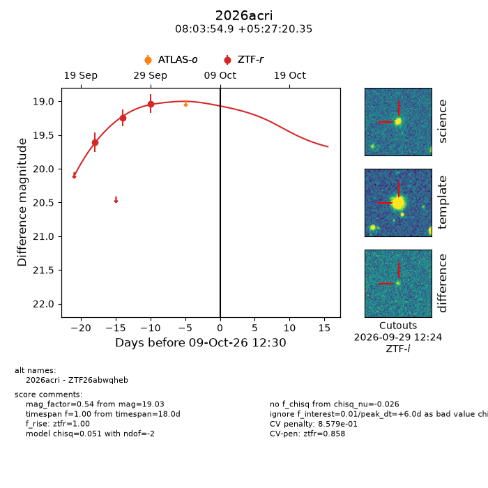
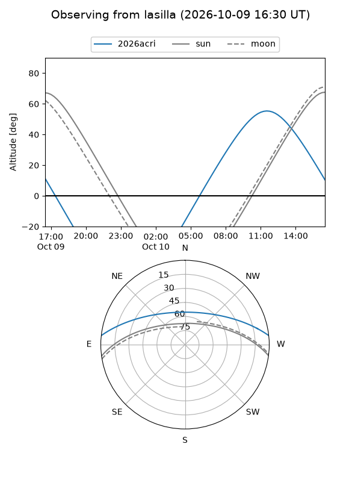
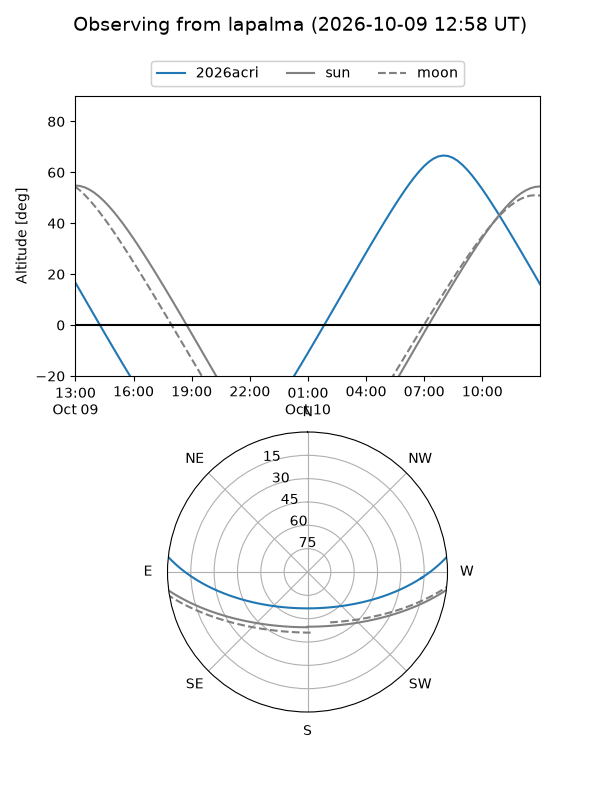
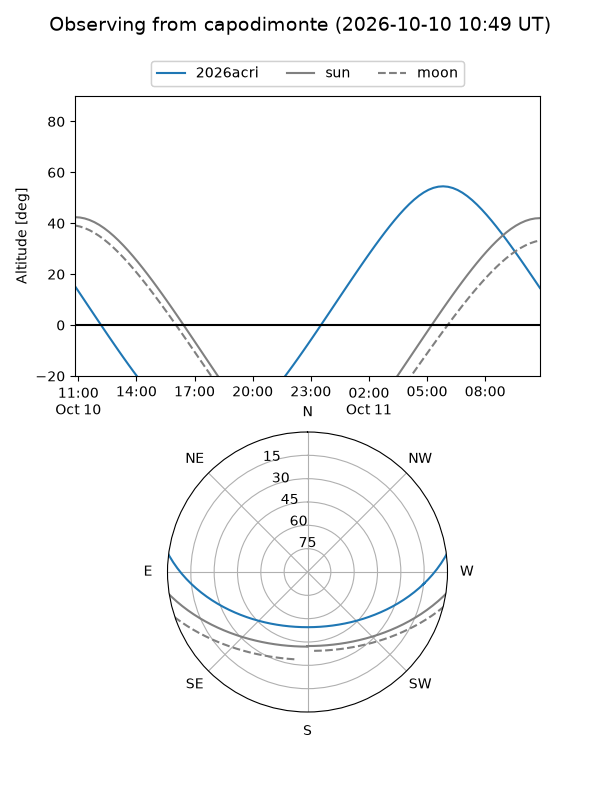
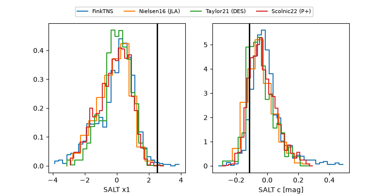

2026acri
Target 2026acri at 2026-10-09 12:32
Aliases and brokers:
FINK-ZTF: ztf.fink-portal.org/ZTF26abwqheb
Lasair-ZTF: lasair-ztf.lsst.ac.uk/objects/ZTF26abwqheb
ALeRCE-ZTF: alerce.online/object/ZTF26abwqheb
YSE-PZ: ziggy.ucolick.org/yse/transient_detail/2026acri
TNS name: wis-tns.org/object/2026acri
Direct TNS query: direct search
alt names
ZTF26abwqheb (ztf,fink_ztf)
2026acri (tns,yse)
Coordinates:
equatorial (ra, dec) = 120.9788,+5.45565
equatorial (HMS+DMS) = 08:03:54.91,+05:27:20.35
galactic (l, b) = (216.3526,+18.59535)
Flags:
peak dt: +6.0
likely cv: !!
Photometry:
last ztfr=19.03
3 ztfr detections
Lightcurve

Visibility



Additional plots
